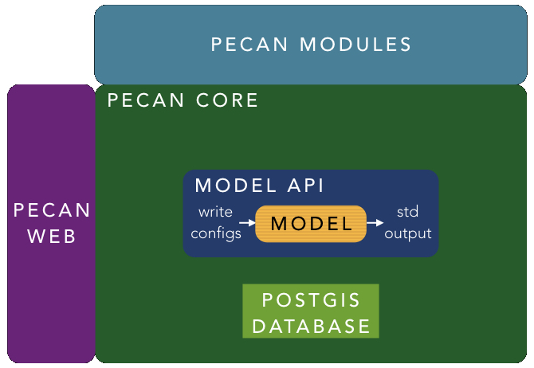

Project Overview
The Predictive Ecosystem Analyzer (PEcAn) is an integrated informatics toolbox for ecosystem modeling (Dietze et al. 2013, LeBauer et al. 2013). PEcAn consists of:
An application program interface (API) that encapsulates an ecosystem model, providing a common interface, inputs, and output.
Core utilities for handling and tracking model runs and the flows of information and uncertainties into and out of models and analyses
An accessible web-based user interface and visualization tools
An extensible collection of modules to handle specific types of analyses (sensitivity, uncertainty, ensemble), model-data syntheses (benchmarking, parameter data assimilation, state data assimilation), and data processing (model inputs and data constraints)

This project is motivated by the fact that many of the most pressing questions about global change are limited by our ability to synthesize existing data and strategically prioritize the collection of new data. This project seeks to improve this ability by developing a framework for integrating multiple data sources in a sensible manner.
The workflow system allows ecosystem modeling to be more reproducible, automated, and transparent in terms of operations applied to data, and thus ultimately more comprehensible to both peers and the public. It reduces the redundancy of effort among modeling groups, facilitate collaboration, and make models more accessible the rest of the research community.
PEcAn is not itself an ecosystem model, and it can be used to with a variety of different ecosystem models; integrating a model involves writing a wrapper to convert inputs and outputs to and from the standards used by PEcAn. Currently, PEcAn supports multiple models listed [PEcAn Models].
Acknowledgements
This material is based upon work supported by the National Science Foundation under Grant No. 1062547, 1062204, 1241894, 1261582, 1318164, 1346748, 1458021, 1638577, the National Aeronautics and Space Administration (NASA) Grant No. 13-TE13-0060, and the Energy Biosciences Institute. Any opinions, findings, and conclusions or recommendations expressed in this material are those of the author(s) and do not necessarily reflect the views of the National Science Foundation or NASA. PEcAn is a collaboration among research groups at the Department of Earth And Environment at Boston University, the Energy Biosciences Institute at the University of Illinois, the Image Spatial Data Analysis group at NCSA, the Department of Atmospheric & Oceanic Sciences at the University Wisconsin-Madison, and the Terrestrial Ecosystem Science & Technology (TEST) Group at Brookhaven National Lab.
BETY-db is a product of the Energy Biosciences Institute at the University of Illinois at Urbana-Champaign. We gratefully acknowledge the great effort of other researchers who generously made their own data available for further study.
PEcAn Publications
- Shiklomanov. A, MC Dietze, T Viskari, PA Townsend, SP Serbin. 2016 “Quantifying the influences of spectral resolution on uncertainty in leaf trait estimates through a Bayesian approach to RTM inversion” Remote Sensing of the Environment 183: 226-238
- Viskari et al. 2015 Model-data assimilation of multiple phenological observations to constrain and forecast leaf area index. Ecological Applications 25(2): 546-558
- Dietze, M. C., S. P. Serbin, C. Davidson, A. R. Desai, X. Feng, R. Kelly, R. Kooper, D. LeBauer, J. Mantooth, K. McHenry, and D. Wang (2014) A quantitative assessment of a terrestrial biosphere model’s data needs across North American biomes. Journal of Geophysical Research-Biogeosciences doi:10.1002/2013jg002392
- LeBauer, D.S., D. Wang, K. Richter, C. Davidson, & M.C. Dietze. (2013). Facilitating feedbacks between field measurements and ecosystem models. Ecological Monographs. doi:10.1890/12-0137.1
- Wang, D, D.S. LeBauer, and M.C. Dietze(2013) Predicting yields of short-rotation hybrid poplar (Populus spp.) for the contiguous US through model-data synthesis. Ecological Applications doi:10.1890/12-0854.1
- Dietze, M.C., D.S LeBauer, R. Kooper (2013) On improving the communication between models and data. Plant, Cell, & Environment doi:10.1111/pce.12043
Longer / auto-updated list of publications that mention PEcAn’s full name in Google Scholar